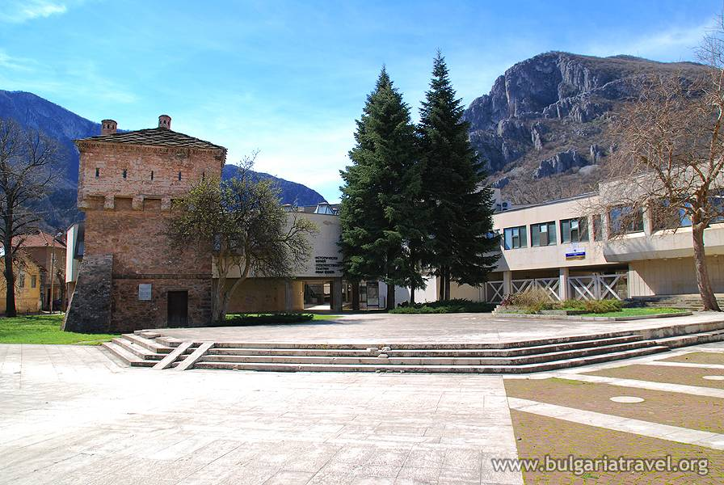

РЕГИОНАЛЕН ИСТОРИЧЕСКИ МУЗЕЙ - ВРАЦА
Началото на музейното дело във Враца се полага през 1925 г. със създаването на сбирка към Мъжката гимназия "Цар Борис III". В края на 30-те години е построена сграда на местното Ученолюбиво дружество, под чиято опека влиза музейната сбирка. През 1953 г. Врачанският музей е обявен за окръжен, а три години след това открива постоянна експозиция в Кулата на Мешчиите, разположена в центъра на града. През 1976 г. е създаден Етнографско-възрожденския комплекс, а през 1980 е отворена за посетители новата сграда на Музея. През 2000 г. Врачанският музей придобива статус на регионален, като включва и местната Художествена галерия в структурата си.
Към момента в Музеят има 10 отдела, от които седем са специализирани. Освен в централната сграда, експозициите му са разположени още в осем обекта, обединени в два комплекса. Провежда археологически проучвания. Към музея има научна група. Изследователската дейност е свързана с профила на Музея. Институцията е представена по убедителен начин и в дигиталното пространство - два от нейните обекти са достъпни на Интернет потребителите за виртуални разходки.
